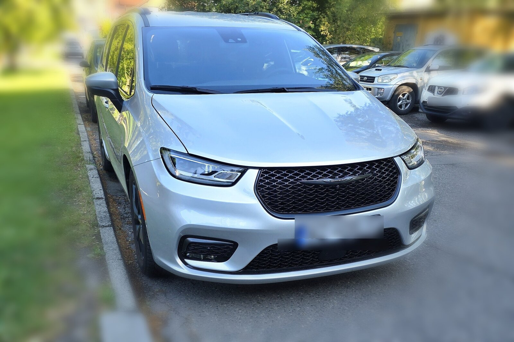
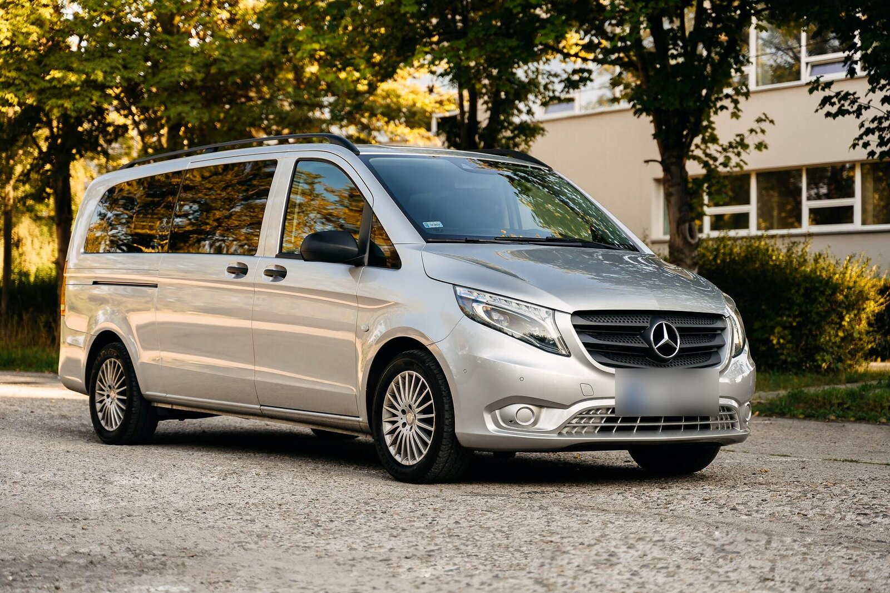
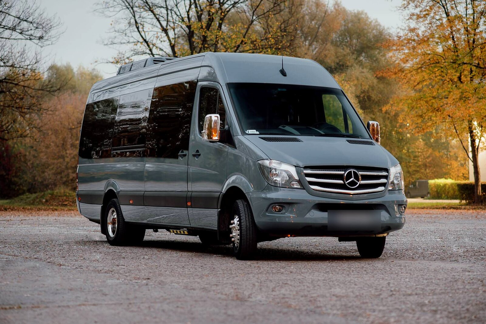
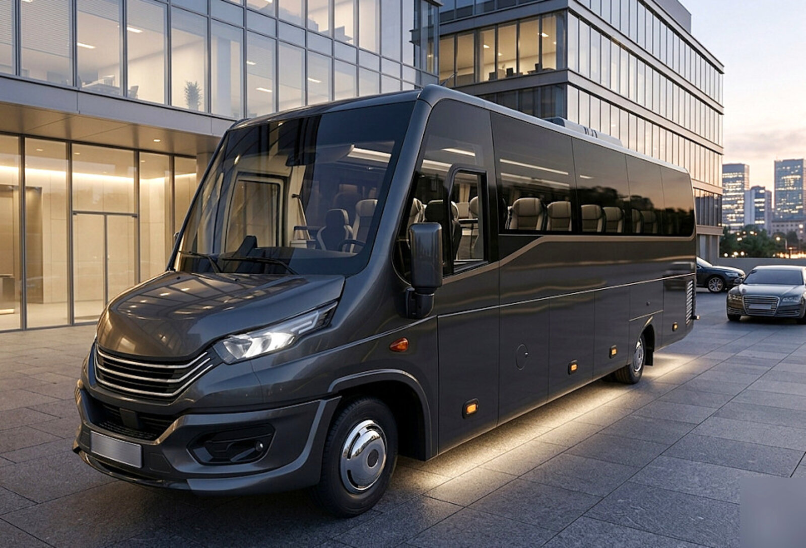
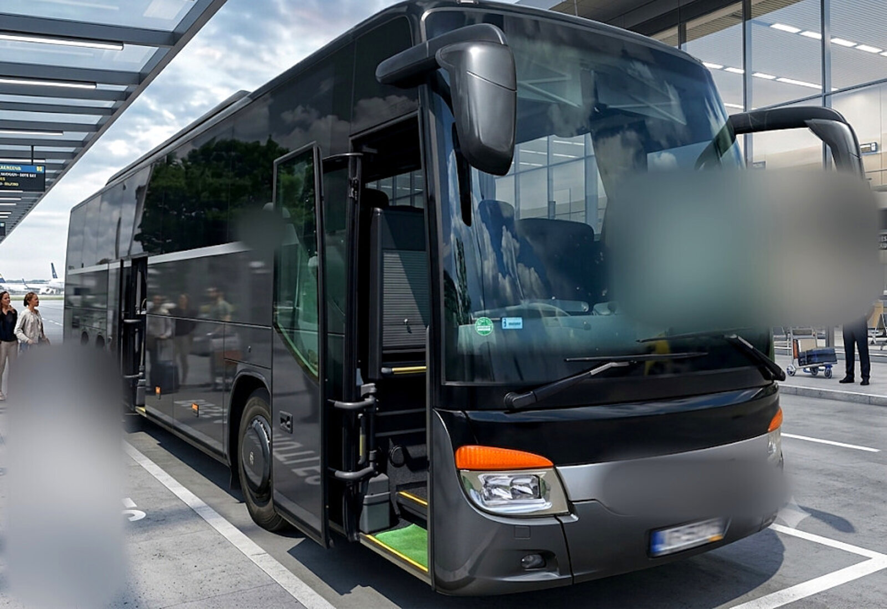

Приватні, пунктуальні трансфери з аеропорту Катовіце-Пшивовіце до Кракова та Закопане. Без пересадок, без очікування інших пасажирів.
Ми також обслуговуємо бізнес-трансфери для компаній та корпоративних гостей.
Від компактного автомобіля до великого автобуса — оберіть транспорт, що відповідає вашій групі та багажу.

Преміальний мінівен для клієнтів, які очікують найвищого рівня комфорту подорожі.

Комфортний мінівен для сімей та невеликих груп. Кондиціонер, багато місця для багажу.

Просторий мікроавтобус для більших груп — комфорт на довшому маршруті в гори.

Сучасний автобус для організованих груп, весіль та корпоративних поїздок.

Великий автобус для великих груп, паломництв та перевезення персоналу.
Ціна завжди узгоджується заздалегідь — жодних прихованих платежів.
| Кількість осіб | День | Ніч |
|---|---|---|
| До 3 осіб | 600 zł | 660 zł |
| До 8 осіб | 700 zł | 780 zł |
| До 20 осіб | 1200 zł | 1400 zł |
| До 30 осіб | за запитом | |
| До 60 осіб | за запитом | |
| Кількість осіб | День | Ніч |
|---|---|---|
| До 3 осіб | 1200 zł | 1320 zł |
| До 8 осіб | 1400 zł | 1560 zł |
| До 20 осіб | 2400 zł | 2800 zł |
| До 30 осіб | за запитом | |
| До 60 осіб | за запитом | |
Орієнтовні ціни для маршруту до Закопане розраховані пропорційно до маршруту до Кракова (прибл. у 2 рази більша відстань і час) — потребує Вашого підтвердження.
| Кількість осіб | День | Ніч |
|---|---|---|
| До 3 осіб | 600 zł | 660 zł |
| До 8 осіб | 700 zł | 780 zł |
| До 20 осіб | 1200 zł | 1400 zł |
| До 30 осіб | за запитом | |
| До 60 осіб | за запитом | |
Маршрут Краків–Закопане оцінюється як маршрут Пшивовіце-Катовіце–Краків (порівнянна відстань, прибл. 100 км) — потребує підтвердження.
Ченстохова, Бельсько-Бяла, Величка, ділові зустрічі та конференції — запитайте індивідуальну пропозицію.
Зустріч прямо в залі прильоту, допомога з багажем.
Ми стежимо за вашим рейсом — чекаємо навіть у разі затримки.
Ціна узгоджена перед поїздкою, без сюрпризів при оплаті.
Забираємо в будь-який час доби.
Заповніть дані, і ми підготуємо повідомлення, готове для надсилання у WhatsApp — підтвердимо час і ціну.
Напишіть нам у WhatsApp — ми відповімо протягом кількох хвилин і підтвердимо бронювання.
Написати в WhatsApp